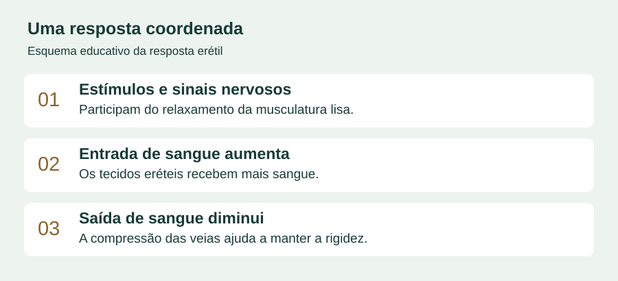
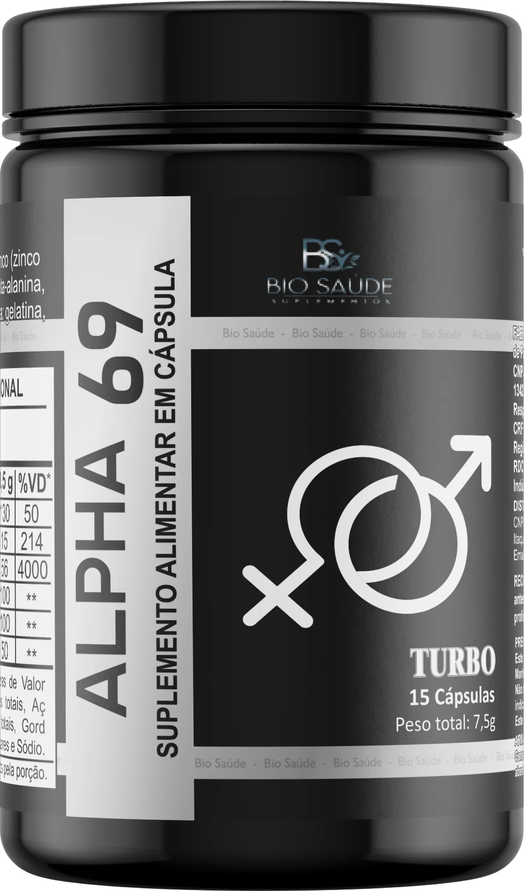

A vontade continua.
Por que a resposta do corpo mudou?
A ereção começa, mas não se mantém como antes. Ou a firmeza varia de um encontro para outro. Entender essas mudanças ajuda a escolher o próximo passo com mais clareza.
O desejo está presente. Existe carinho, existe atração. Mesmo assim, em algumas ocasiões, a resposta do corpo surpreende: a ereção demora a acontecer ou perde firmeza antes do esperado.
A dúvida pode surgir antes de qualquer conversa: “É o cansaço? É a idade? Isso vai acontecer de novo?”
Sentir-se jovem e perceber uma mudança íntima pode parecer contraditório. Mas completar 40 anos não estabelece um prazo para a vida sexual — nem explica, sozinho, o que está acontecendo.
O que mudou: vontade, firmeza ou continuidade?
Essas perguntas parecem semelhantes, mas ajudam a organizar a conversa. Desejo e ereção são aspectos diferentes da resposta sexual. Uma dificuldade de firmeza não permite concluir que a atração acabou ou que exista uma única causa.
O NIDDK, instituto dos Estados Unidos dedicado a doenças metabólicas e urológicas, inclui dificuldades para obter e manter a ereção entre os sintomas que merecem investigação. Reconhecer um padrão ajuda a explicar o problema; não permite descobrir sua causa pela internet. [1]
O corpo não separa a vida íntima do restante da saúde
A resposta erétil depende da coordenação entre estímulos, nervos, circulação e tecidos. O contexto emocional também participa. Por isso, atribuir tudo ao nervosismo — ou apenas à circulação — deixa de fora parte da história.

As diretrizes da Associação Europeia de Urologia descrevem fatores vasculares, hormonais, neurológicos e psicológicos, que podem coexistir. Histórico de saúde, medicamentos e circunstâncias da dificuldade fazem parte da avaliação. [2]
Observar é diferente de adiar
Não é preciso esperar que a dificuldade domine a vida do casal para conversar sobre ela. Se a mudança persiste ou preocupa, procure avaliação de um profissional de saúde. Leve informações sobre quando começou, com que frequência ocorre e quais medicamentos ou suplementos utiliza.
Uma conversa aberta também evita que o silêncio transforme uma questão de saúde em uma interpretação sobre afeto ou atração. Dizer “percebi uma mudança e quero entender” pode abrir espaço para lidar com o assunto sem acusações.
Hábitos e condições clínicas podem influenciar a resposta sexual. O NIDDK cita, entre os fatores relacionados, diabetes, doenças vasculares, determinados medicamentos, estresse, tabagismo e consumo excessivo de álcool. Não suspenda um tratamento por conta própria. [1]
Antes de escolher um suplemento, veja o que conferir
Quem começa a pesquisar encontra anúncios de soluções rápidas, ingredientes conhecidos e explicações sobre circulação. Mas uma explicação convincente sobre o corpo não é, por si só, demonstração do efeito de um produto.
O mesmo cuidado vale para suplementos. Antes de decidir, compare a composição, a quantidade de cada ingrediente, a identificação do fornecedor e as orientações profissionais pertinentes ao seu caso.
Você não precisa comprar no impulso para começar a esclarecer suas dúvidas.
Mais de 10 mil compradores já escolheram o Alpha69
Segundo a Bio Saúde, são mais de 10 mil compradores do Alpha69 em mais de três anos de comercialização. Conheça o suplemento e consulte as condições para fazer seu pedido.

Fórmula, embalagem e condições: tire as dúvidas antes de decidir
O material de rotulagem fornecido apresenta magnésio, zinco, vitamina B6, L-arginina, beta-alanina e extrato de pinheiro marítimo, em embalagem com 15 cápsulas.
Confira o rótulo vigente do lote comercializado. A presença desses ingredientes não comprova tratamento de dificuldades de ereção.
Conheça o Alpha69 a partir de R$ 249,00 para um mês de uso.
Fale agora com um consultor e consulte as condições para fazer seu pedido.
No WhatsApp, toque em Enviar para receber as condições.
A mensagem já vai pronta. Você recebe as condições e decide depois, sem obrigação de compra.
Uma conversa objetiva, no seu ritmo
Antes de fechar um pedido, peça estas informações:
- Composição: rótulo completo e quantidades por porção.
- Compra: preço total, quantidade de embalagens, frete e formas de pagamento.
- Entrega e suporte: prazo para seu CEP, identificação do vendedor e condições de atendimento após a compra.
O contato é comercial. Ele serve para esclarecer informações do produto e da compra; a avaliação da dificuldade sexual e da adequação do suplemento exige orientação profissional.
Dúvidas que merecem resposta clara
O Alpha69 é um medicamento para ereção?
É apresentado como suplemento alimentar. Esta página não o indica como tratamento para disfunção erétil.
A explicação sobre circulação demonstra que ele funciona?
Não. A explicação é educativa. As fontes citadas não avaliaram o Alpha69 e não comprovam seu efeito.
Posso usar se tomo medicamentos?
A composição e os medicamentos em uso devem ser avaliados por um profissional de saúde. Não presuma que um suplemento seja adequado para todas as pessoas.
Como consulto o valor?
Envie sua mensagem para consultar as condições especiais e personalizadas com o atendimento comercial. Peça o preço total, o frete e as condições antes da compra.
Conheça a oferta do Alpha69 a partir de R$ 249,00
A opção de entrada informada pela Bio Saúde custa R$ 249,00 para um mês de uso. Consulte as condições de pagamento, o frete e a entrega para seu CEP antes de fazer o pedido.
QUERO CONHECER A OFERTAA consulta começa quando você toca em Enviar no WhatsApp.
Sem obrigação de compra. Condições informadas pelo atendimento.
Fontes do conteúdo educativo
[1] NIDDK — Symptoms & Causes of Erectile Dysfunction.
[2] European Association of Urology — Management of Erectile Dysfunction.
Consultadas em 21/10/2026. Estas fontes tratam de saúde; não representam endosso ao produto.